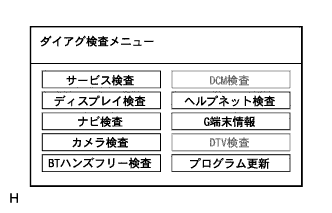

HDDナビゲーションシステム ダイアグノーシスシステム |

起動方法1
車両停止状態にする。
IGスイッチACC、ONまたはエンジンを始動する。
 |
ナビゲーションレシーバASSYの“情報·G”キーを押しながら、ヘッドランプディマスイッチをOFF→TAIL→OFF→TAIL→OFF→TAIL→OFFと操作する。
 |
ダイアグノーシスが起動すると“サービス検査”画面が表示され、サービス検査が実施される。
|  |
“サービス検査”画面の“検査メニュー”を選択し、ダイアグ検査メニュー画面を表示させる。
| 表示 | 内容 |
|---|---|
| サービス検査 | システム検査+ダイアグメモリ収集を行い、双方の結果から、各接続機器の現在·過去の検査結果を表示する |
| ディスプレイ検査 | ディスプレイ部分の固有の検査を行う画面を表示する |
| ナビ検査 | ナビECU部分の固有の検査および設定を行う画面を表示する |
| カメラ検査 | バックガイドモニターシステムの調整を行う画面を表示する |
| BTハンズフリー検査 | Bluetoothハンズフリー機能の検査および設定を行う画面を表示する |
| ヘルプネット検査 | ヘルプネットシステムの検査および設定を行う画面を表示する |
| G端末情報 | G-BOOK端末の情報を表示する画面を表示する |
| プログラム更新 | このスイッチは押下できるが使用しない |
 参照)
参照)起動方法2
車両停止状態にする。
IGスイッチACC、ONまたはエンジンを始動する。
 |
TV以外の画面で、ナビゲーションレシーバASSYの“画質·消”キーを押し、画質調整画面を表示させる。
画質調整画面の左上と左下部分を、左上→左下→左上→左上→左下→左上→左下のように、ゆっくりとタッチ操作する。
|
ダイアグノーシスが起動すると“サービス検査”画面が表示され、サービス検査が実施される。
“サービス検査”画面の“検査メニュー”を選択し、ダイアグ検査メニュー画面を表示させる。
| 表示 | 内容 |
|---|---|
| サービス検査 | システム検査+ダイアグメモリ収集を行い、双方の結果から、各接続機器の現在·過去の検査結果を表示する |
| ディスプレイ検査 | ディスプレイ部分の固有の検査を行う画面を表示する |
| ナビ検査 | ナビECU部分の固有の検査および設定を行う画面を表示する |
| カメラ検査 | バックガイドモニターシステムの調整を行う画面を表示する |
| BTハンズフリー検査 | Bluetoothハンズフリー機能の検査および設定を行う画面を表示する |
| ヘルプネット検査 | ヘルプネットシステムの検査および設定を行う画面を表示する |
| G端末情報 | G-BOOK端末の情報を表示する画面を表示する |
| プログラム更新 | このスイッチは押下できるが使用しない |
参照)解除方法
解除方法は、IGスイッチOFFにする。または、“画質·消”キーを3秒以上押す。
|
サービス検査
参照。 |
| 表示 | 内容 |
|---|---|
| カラーバー検査 | ディスプレイのカラー表示の検査 |
| タッチスイッチ検査 | ディスプレイのタッチスイッチ動作状態の検査 |
| パネルスイッチ検査 | ディスプレイ外周の各スイッチ動作状態の検査 |
| 車両信号検査 | ディスプレイに入力している車両側信号の状態の検査 |
| CAN接続検査 | CAN通信で接続されている機器の確認検査 |
| MMダイアグレコーダー | - |
参照。 |
| 表示 | 内容 |
|---|---|
| GPS情報 |
|
| 車両信号&センサ検査 | ナビゲーションレシーバASSYに入力する車両信号情報を表示 |
| カラーバー検査 | ナビゲーションレシーバASSYのカラー表示を確認 |
| VICS検査 | VICSレシーバ検査·各ビーコン情報等の表示画面の呼び出し |
| メモリ退避·読込 | ナビメモリ情報を退避·読み込みすることができる |
| 製品情報 | ナビゲーションレシーバASSY、地図ディスクのバージョンおよびメーカ名を表示する |
| 音楽サーバ情報 | 音楽サーバの各種情報を表示する |
| マイク·音声認識検査 | ナビゲーションレシーバASSYに接続するマイクの検査画面を表示する |
| HDD情報 | ナビゲーションレシーバASSYに内蔵されているハードディスクドライブの情報を表示する |
GPS情報
ダイアグノーシスを起動させ、ダイアグ検査メニュー画面を表示させる。
ダイアグ検査メニュー画面の“ナビ検査”を選択し、ナビ検査メニューを表示させる。
ナビ検査メニュー画面の“GPS情報”を選択し、GPS情報画面を表示させる。
GPS関連情報を確認する。
| 表示 | 意味 |
|---|---|
| 衛星情報 | アンテナが捕捉する衛星の“衛星番号”“仰角”“方位”“信号レベル”“受信状態”を表示(最大12衛星分) |
| 日時 | GPSレシーバから得られる日時情報を“年”“月”“日”“時”“分”“秒”で表示 |
| 位置 | 現在地の緯度·経度情報を“度”“分”“秒”で表示 |
| 表示 | 条件 |
|---|---|
| 使用中 | 該当衛星を測位に使用している場合 |
| 受信中 | 該当衛星を捕捉しているが、測位には使用していない場合 |
| - | 該当衛星を捕捉できていない場合 |
| 表示 | 条件 |
|---|---|
| 2D | 2次元測位時 |
| 3D | 3次元測位時 |
| D-2D | ディファレンシャル有効2次元測位時 |
| D-3D | ディファレンシャル有効3次元測位時 |
| NG | 測位データ使用不可時 |
| error | 受信エラー発生時 |
| - | 上記以外 |
“日時設定”スイッチを選択し、GPS日時設定を行う。
車両信号&センサ検査
参照。 |
ナビカラーバー検査
参照。 |
VICS検査
ダイアグノーシスを起動させ、ダイアグ検査メニュー画面を表示させる。
ダイアグ検査メニュー画面の“ナビ検査”を選択し、ナビ検査メニュー画面を表示させる。
ナビ検査メニュー画面の“VICS検査”を選択し、VICS検査を表示させる。
| 表示 | 内容 |
|---|---|
| 2メディアレシーバ検査 | VICSレシーバのダイアグ情報を表示(VICSレシーバ装着車) |
| 電波ビーコン情報 | ナビゲーションレシーバASSYが保持している電波ビーコン情報を表示(VICSレシーバ装着車) |
| 光ビーコン情報 | ナビゲーションレシーバASSYが保持している光ビーコン情報を表示(VICSレシーバ装着車) |
| FM多重情報 | ナビゲーションレシーバASSYが保持しているFM多重情報を表示 |
 |
“FM多重情報”を選択する。
| 表示 | 意味 |
|---|---|
| 周波数 | 受信周波数を表示する |
| 提供時間 | 受信中のFM多重放送データの提供時刻を表示する |
 |
製品情報
ダイアグノーシスを起動させ、ダイアグ検査メニュー画面を表示させる。
ダイアグ検査メニュー画面の“ナビ検査”を選択し、ナビ検査メニュー画面を表示させる。
ナビ検査メニュー画面の“製品情報”を選択し、製品情報画面を表示させる。
製品情報を確認する。
| 表示 | 内容 |
|---|---|
| ナビメーカー名 (*1) | ナビゲーションレシーバASSYのメーカ名を表示する |
| ナビバージョン番号 (*2) | ナビゲーションレシーバASSYのバージョンを表示する |
| ディスクメーカー情報 (*3) | 地図データのディスクメーカ名を表示する |
| メディアバージョン番号 (*4) | 地図データのデータバージョンを表示する |
音楽サーバ情報
ダイアグノーシスを起動させ、ダイアグ検査メニュー画面を表示させる。
ダイアグ検査メニュー画面の“ナビ検査”を選択し、ナビ検査メニュー画面を表示させる。
ナビ検査メニュー画面の“音楽サーバ情報”を選択し、音楽サーバ情報画面を表示させる。
音楽サーバ情報を確認する。
| 表示 | 内容 |
|---|---|
| HDD録音機能 | 音楽サーバでの、HDDへの録音機能の“実施”/“停止”を設定する |
| CDDB Ver. | HDDに格納されているCDDBのバージョンを表示する |
| アルバム数 |
|
| 録音曲数 |
|
| マイセレクト数 | HDDに格納されている曲数を、10進数で表示する |
| HDD空き容量 | HDD内の音楽サーバ用領域の空き容量を表示する(単位:KB) |
HDD録音機能の設定を行う場合は、“実施”/“停止”を選択する。
 |
マイク·音声認識検査
参照。 |
HDD情報
参照。 |
参照。 |
参照。参照。参照。